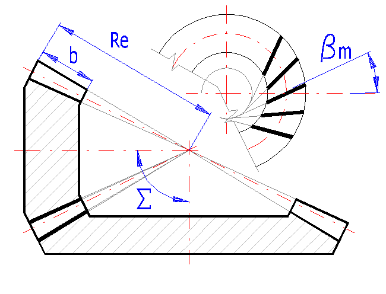
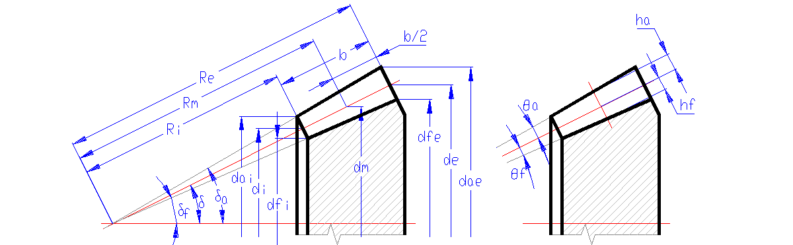
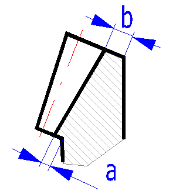

📥 Phần Đầu Vào (Input Section)
Mục 1.0 đến Mục 5.0 (Thông Số Truyền Động, Vật Liệu, Biên Dạng, Mô Đun & Dịch Chỉnh)
1.0 Nhập Các Thông Số Truyền Động Cơ Bản (Options of basic input parameters)
▶| # | Thông Số Tính Toán | Ký Hiệu | Bánh Dẫn (Pinion 1) | Bánh Bị Dẫn (Gear 2) | Đơn Vị | Công Cụ Tiện Ích |
|---|---|---|---|---|---|---|
| 1.1 | Công suất truyền động (Transferred power) | P | - | kW | - | |
| 1.2 | Tốc độ quay (Speed Pinion / Gear) | n | vòng/phút | |||
| 1.3 | Mô-men xoắn danh nghĩa (Torsional moment) | Mk | 477.46 | 1173.22 | N.m | |
| 1.4 | Tỉ số truyền yêu cầu (Transmission ratio / from table) | i_req |
|
- | - | - |
| 1.5 | Tỉ số truyền thực tế / Độ lệch (Actual ratio / deviation) | i | 2.5000 | 0.00% | - | - |
3.0 Thông Số Biên Dạng Răng & Kiểu Răng (Parameters of the tooth profile, gearing type)
▶| # | Thông Số Biên Dạng | Ký Hiệu | Bánh Dẫn (Pinion 1) | Bánh Bị Dẫn (Gear 2) | Đơn Vị | Công Cụ Tiện Ích |
|---|---|---|---|---|---|---|
| 3.1 | Đường cong răng / Kiểu răng côn (Type of toothing) | Type | - | - | ||
| 3.2 | Hệ số chiều cao đỉnh răng danh nghĩa (Addendum) | ha0* | [modul] | - | ||
| 3.3 | Hệ số khe hở chân răng (Unit head clearance) | c0* | [modul] | - | ||
| 3.4 | Hệ số bán kính lượn chân răng khuyến nghị | rf_rec* | 0.286 | 0.286 | [modul] | - |
| 3.5 | Hệ số bán kính lượn chân răng thiết kế | rf* | [modul] | - | ||
4.0 Thiết Kế Mô Đun & Thông Số Ăn Khớp (Design of a module & geometry of toothing)
▼| # | Thông Số Tính Toán | Ký Hiệu | Bánh Dẫn (Pinion 1) | Bánh Bị Dẫn (Gear 2) | Đơn Vị | Công Cụ Tiện Ích |
|---|---|---|---|---|---|---|
| 4.1 | Số răng bánh 1 & bánh 2 (Number of teeth) | z | răng | |||
| 4.2 | Góc giữa hai trục truyền động (Angle of shaft axes) | Σ |
|
- | độ (°) | - |
| 4.3 |
|
α |
|
17.5° | độ (°) | - |
| 4.4 | Góc xoắn răng trung bình (Base helix angle) | βm |
|
0.0 | độ (°) | - |
| 4.5 | Hướng xoắn răng bánh dẫn (Direction of teeth pitch) | Hand | - | - | ||
| 4.6 | Thanh trượt điều chỉnh tỉ số bề rộng nón (b / Re) | b/Re | - | |||
| 4.7 | Tỉ số chiều rộng vành răng trên chiều dài nón | Re/b | 0.3458 | < 0.35 | - | - |
| 4.8 |
|
mmn |
|
11.547 | mm | - |
| 4.9 | Chiều rộng vành răng (Face width / max recommended) | b | < 118 | mm | - | |
| 4.10 | Khối lượng ước tính của bộ truyền (Gearing weight) | m | 134.331 | kg | - | |
|
📐 Sơ Đồ Góc Xoắn βm & Thông Số Nón (ISO 23509)

📈 Tọa Độ Mặt Cắt Trục Ăn Khớp 2D (Axial Section Plot)
|
||||||
5.0 Dịch Chỉnh Biên Dạng & Chiều Dày Răng (Correction of toothing)
▼| # | Thông Số Dịch Chỉnh | Ký Hiệu | Bánh Dẫn (Pinion 1) | Bánh Bị Dẫn (Gear 2) | Đơn Vị | Công Cụ Tiện Ích |
|---|---|---|---|---|---|---|
| 5.1 | Phương pháp xác lập hệ số dịch chỉnh (Correction type) | Type | - | - | ||
| 5.2 | Giá trị khuyến nghị từ bảng thiết kế (Recommended value) | x1 / xt1 | 0.265 | 0.000 | - | - |
| 5.3 | Giới hạn cắt lẹm cho phép (Permissible undercutting) | x1_min | -0.5154 | -7.5964 | - | - |
| 5.4 | Giới hạn chống cắt lẹm tuyệt đối (Prevent undercutting) | x1_lim | -0.3488 | -7.4297 | - | - |
| 5.5 | Thanh trượt điều chỉnh hệ số dịch chỉnh chiều cao x1 | x1 Slider | - | - | ||
| 5.6 | Hệ số dịch chỉnh chiều cao răng (Addendum modification) | x | -0.3200 | - | - | |
| 5.7 | Hệ số dịch chỉnh chiều dày răng (Tooth thickness mod.) | xt | -0.0400 | - | - | |
| 5.8 | Hệ số trùng khớp tổng cộng (Total contact ratio) | εγ | 3.0117 | - | - | |
| 5.9 | Chiều dày đỉnh răng chuẩn (Chống nhọn: sae* ≥ 0.25) | sae* | 0.735 | 1.118 | [modul] | - |
📤 Phần Kết Quả Tính Toán (Results Section)
Mục 6.0 đến Mục 8.0 (Hình Học Đầy Đủ 39 Dòng, Răng Ảo Tredgold & Chỉ Số Chất Lượng)
6.0 Kích Thước Cơ Bản Của Cặp Bánh Răng Côn (Basic dimensions of gearing - ISO 23509)
▼
📐 Bản Vẽ Kỹ Thuật Định Nghĩa Kích Thước Hình Học Bánh Răng Côn (Technical Dimension Reference - ISO 23509)

| # | Kích Thước Hình Học (3 Mặt Cắt: Ngoài - Giữa - Trong) | Ký Hiệu | Bánh Dẫn (Pinion 1) / Ngoài (Outer) | Bánh Bị Dẫn (Gear 2) / Trung Bình (Middle) | Mặt Trong (Inner) | Đơn Vị |
|---|---|---|---|---|---|---|
| 6.1 | Số răng bánh 1 & bánh 2 (Number of teeth) | z | 18 | 45 | - | răng |
| 6.2 | Mô đun tiếp tuyến (Mặt ngoài met / Trung bình mmt / Mặt trong mit) | met, mmt, mit | 13.9610 | 11.5470 | 9.1330 | mm |
| 6.3 | Mô đun pháp tuyến (Mặt ngoài men / Trung bình mmn / Mặt trong min) | men, mmn, min | 12.0906 | 10.0000 | 7.9094 | mm |
| 6.4 | Chiều dài đường sinh nón (Mặt ngoài Re / Trung bình Rm / Mặt trong Ri) | Re, Rm, Ri | 338.321 | 279.821 | 221.321 | mm |
| 6.5 | Góc nón chia (Pitch cone angle) | δ | 21.8014 | 68.1986 | - | độ (°) |
| 6.6 | Góc nón đỉnh (Addendum cone angle) | δa | 24.5022 | 69.5907 | - | độ (°) |
| 6.7 | Góc nón đáy (Dedendum cone angle) | δf | 20.0001 | 65.0893 | - | độ (°) |
| 6.8 | Đường kính đỉnh ngoài (Outer tip diameter) | dae | 280.935 | 634.354 | - | mm |
| 6.9 | Đường kính đỉnh trung bình (Middle tip diameter) | dam | 232.358 | 524.666 | - | mm |
| 6.10 | Đường kính đỉnh trong (Inner tip diameter) | dai | 183.781 | 414.978 | - | mm |
| 6.11 | Đường kính chia ngoài (Outer pitch diameter) | de | 251.299 | 628.247 | - | mm |
| 6.12 | Đường kính chia trung bình (Middle pitch diameter) | dm | 207.846 | 519.615 | - | mm |
| 6.13 | Đường kính chia trong (Inner pitch diameter) | di | 164.393 | 410.983 | - | mm |
| 6.14 | Đường kính đáy ngoài (Outer root diameter) | dfe | 231.541 | 614.596 | - | mm |
| 6.15 | Đường kính đáy trung bình (Middle root diameter) | dfm | 191.505 | 508.325 | - | mm |
| 6.16 | Đường kính đáy trong (Inner root diameter) | dfi | 151.469 | 402.054 | - | mm |
| 6.17 | Góc đỉnh răng (Addendum angle) | θa | 2.7008 | 1.3921 | - | độ (°) |
| 6.18 | Góc đáy răng (Dedendum angle) | θf | 1.8013 | 3.1093 | - | độ (°) |
| 6.19 | Chiều cao đỉnh ngoài (Outer addendum) | hae | 15.960 | 8.222 | - | mm |
| 6.20 | Chiều cao đỉnh trung bình (Middle addendum) | ha | 13.200 | 6.800 | - | mm |
| 6.21 | Chiều cao đỉnh trong (Inner addendum) | hai | 10.440 | 5.378 | - | mm |
| 6.22 | Chiều cao đáy ngoài (Outer dedendum) | hfe | 10.640 | 18.378 | - | mm |
| 6.23 | Chiều cao đáy trung bình (Middle dedendum) | hf | 8.800 | 15.200 | - | mm |
| 6.24 | Chiều cao đáy trong (Inner dedendum) | hfi | 6.960 | 12.022 | - | mm |
| 6.25 | Góc áp lực pháp tuyến (Normal pressure angle) | αn | 17.4952 | độ (°) | ||
| 6.26 | Góc áp lực tiếp tuyến (Transverse pressure angle) | αt | 20.0000 | độ (°) | ||
| 6.27 | Góc xoắn răng trung bình (Helix angle) | β | 30.0000 | độ (°) | ||
| 6.28 | Góc xoắn cơ sở (Base helix angle) | βb | 28.4812 | độ (°) | ||
| 6.29 | Góc áp lực vòng lăn pháp tuyến (Operating normal press.) | αwn | 17.4953 | độ (°) | ||
| 6.30 | Góc áp lực vòng lăn tiếp tuyến (Operating transv. press.) | αwt | 20.0000 | độ (°) | ||
| 6.31 | Bước răng pháp ngoài (Circular pitch) | pe | 37.9838 | mm | ||
| 6.32 | Bước răng tiếp tuyến ngoài (Transverse circular pitch) | pte | 43.8599 | mm | ||
| 6.33 | Chiều dày răng pháp ngoài (Normal pitch tooth thickness) | sne | 22.2919 | 15.6919 | - | mm |
| 6.34 | Chiều dày răng pháp trung bình (Middle pitch thickness) | sn | 18.4374 | 12.9786 | - | mm |
| 6.35 | Chiều dày răng pháp trong (Inner pitch tooth thickness) | sni | 14.5828 | 10.2652 | - | mm |
| 6.36 | Chiều dày đỉnh răng ngoài (Outer tip tooth thickness) | sae | 8.8833 | 13.5204 | - | mm |
| 6.37 | Chiều dày đỉnh răng trung bình (Middle tip thickness) | sa | 7.3473 | 11.1826 | - | mm |
| 6.38 | Chiều dày đỉnh răng trong (Inner tip tooth thickness) | sai | 5.8112 | 8.8447 | - | mm |
| 6.39 | Chiều dày đỉnh răng chuẩn (sae / men) | sae* | 0.735 | 1.118 | - | [modul] |
7.0 Bánh Răng Trụ Tương Đương - Tredgold (Virtual spur gear toothing)
▶| # | Thông Số Bánh Răng Ảo | Ký Hiệu | Bánh Dẫn (Pinion 1) | Bánh Bị Dẫn (Gear 2) | Đơn Vị |
|---|---|---|---|---|---|
| 7.1 | Số răng ảo pháp diện (Virtual teeth - normal) | zvn | 19.387 | 121.166 | răng |
| 7.2 | Số răng ảo tiếp tuyến (Virtual teeth - transverse) | zv | 29.848 | 186.548 | răng |
| 7.3 | Đường kính chia tương đương (Virtual reference diameter) | dvm | 223.857 | 1399.107 | mm |
| 7.4 | Đường kính đỉnh tương đương (Virtual tip diameter) | dva | 250.257 | 1412.707 | mm |
| 7.5 | Đường kính cơ sở tương đương (Virtual base diameter) | dvb | 210.357 | 1314.730 | mm |
| 7.6 | Đường kính đáy tương đương (Virtual root diameter) | dvf | 206.257 | 1368.707 | mm |
| 7.7 | Khoảng cách trục tương đương (Virtual center distance) | av | 811.482 | mm | |
| 7.8 | Tỉ số truyền ảo tương đương (Virtual gear ratio) | iv | 6.250 | - | |
8.0 Chỉ Số Chất Lượng Bộ Truyền (Qualitative indexes of a gearing)
▶| # | Chỉ Tiêu Chất Lượng | Ký Hiệu | Bánh Dẫn (Pinion 1) | Bánh Bị Dẫn (Gear 2) | Đơn Vị |
|---|---|---|---|---|---|
| 8.1 | Hệ số trùng khớp ngang / trùng khớp dọc | εα / εβ | 1.4289 | 1.5828 | - |
| 8.2 | Hệ số trùng khớp tổng cộng (Total contact ratio) | εγ | 3.0117 | - | |
| 8.3 | Vận tốc quay cộng hưởng (Resonance speed) | nE1 | 6188.65 | vòng/phút | |
| 8.4 | Tỉ số cộng hưởng (Resonance ratio) | N | 0.16 | - | |
| 8.5 | Khối lượng ước tính của cặp bánh răng côn | m | 134.331 | kg | |
| 8.6 | Hiệu suất truyền động của bộ truyền | η | 98.30% | % | |
| 8.7 | Độ nhớt dầu bôi trơn khuyến nghị tại 50°C | v50 | 57 mm²/s | mm²/s | |
⚙️ Phần Mở Rộng & Chế Tạo (Additions & Manufacturing Section)
Mục 11.0, 15.0 & 16.0 DIN 3965 / DXFTables (Lắp Ráp, Đo Mỏ Kẹp, Tính Phụ Trợ & Hệ Thống CAD)
11.0 Lắp Ráp, Đo Kiểm Mỏ Kẹp & Dung Sai Chế Tạo (Assembly, Chordal Measurement & Tolerances)
▼| # | Thông Số Lắp Ráp & Đo Kiểm Tra Răng | Ký Hiệu | Bánh Dẫn (Pinion 1) | Bánh Bị Dẫn (Gear 2) | Đơn Vị |
|---|---|---|---|---|---|
| 11.1 | Khoảng cách lắp ghép từ đỉnh nón đến mặt lưng (Apex to back) | Apex | 314.121 | 125.648 | mm |
| 11.2 | Chiều dày dây cung đo bằng thước kẹp mỏ răng (Chordal thickness) | sc̄ | 18.366 | 12.964 | mm |
| 11.3 | Chiều cao định vị mỏ kẹp đo răng (Chordal addendum) | hc | 13.578 | 6.877 | mm |
| 11.4 | Cấp chính xác chế tạo (Đồng bộ với Mục 2.6) | Q | - | ||
| 11.5 | Dung sai sai lệch bước răng (Single pitch deviation) | fpt | 18.2 µm | µm | |
| 11.6 | Dung sai hướng răng (Total helix deviation) | Fβ | 36.0 µm | µm | |
| 11.7 | Độ đảo vành răng hướng tâm (Radial runout) | Fr | 35.5 µm | µm | |
15.0 Các Phép Tính Toán Phụ Trợ (Auxiliary Calculations - MITCalc 1.74)
▶| # | Thông Số Tính Toán Phụ Trợ | Ký Hiệu | Bánh Dẫn (Pinion 1) | Bánh Bị Dẫn (Gear 2) / Kết Quả | Đơn Vị | Tác Vụ |
|---|---|---|---|---|---|---|
| 15.1 Tính toán tỉ số truyền từ tốc độ vòng quay (Calculation of transmission ratio from speed) | ||||||
| 15.1 | Tốc độ vòng quay bánh dẫn & bánh bị dẫn | n1, n2 | v/p (rpm) | - | ||
| - | Tỉ số truyền tính toán (Transmission ratio) | i | 2.6667 | - | ||
| 15.2 Tính toán công suất từ mô-men xoắn và tốc độ (Calculation of power from torque and speed) | ||||||
| 15.2 | Mô-men xoắn trên bánh dẫn | M1 | N.m | - | ||
| - | Tốc độ vòng quay bánh dẫn | n1 | v/p (rpm) | - | ||
| - | Công suất truyền động tính toán (Transmitted power) | P | 45.239 | kW | ||
| 15.3 Tính toán tỉ số truyền từ số răng (Calculation of transmission ratio from number of teeth) | ||||||
| 15.3 | Số răng bánh 1 & bánh 2 | z1, z2 | 18 | 45 | răng | - |
| - | Tỉ số truyền động học (Transmission ratio) | i | 2.5000 | - | ||
16.0 Xuất Bản Vẽ Đồ Họa, Hệ Thống CAD & Bảng Chế Tạo (Graphic Output, CAD Systems & DXFTables)
▶
🖥️ 16.1 Chọn Hệ Thống CAD Mục Tiêu (CAD System Selection)
| 16.1 | Xuất bản vẽ 2D sang (2D drawing output to): | |||
| 16.2 | Tỉ lệ bản vẽ 2D (2D Drawing scale): | |||
| 16.3 | Chi tiết bản vẽ hiển thị (Detail): | |||
| 16.7 | Bảng thông số chế tạo CAD (Table of parameters): | |||
⚙️ 16.2 Thông Số Dao Cắt & Dịch Chỉnh Gia Công CAD
| Thông Số | Ký Hiệu | Bánh 1 | Bánh 2 | Đơn Vị |
|---|---|---|---|---|
| Bán kính dao cắt nón (Tool radius R = 1.5·b) | R | 175.5 | 175.5 | mm |
| Lượng dịch chỉnh trong (Inner offset) | a | 4.629 | 5.658 | mm |
| Lượng dịch chỉnh ngoài (Outer offset) | b | 12.730 | 19.095 | mm |
📐 Sơ Đồ Lượng Dịch Chỉnh Răng R, a, b

16.3 Lệnh Xuất Đồ Họa & Bản Vẽ:
Tương thích AutoCAD, SolidWorks, Inventor
📋 16.4 Bảng Thuộc Tính Xuất Danh Mục BOM (Bill of Materials)
| Dòng BOM | Thuộc Tính Chi Tiết | Bánh Dẫn (Pinion 1) | Bánh Bị Dẫn (Gear 2) |
|---|---|---|---|
| Dòng 1 | Tên chi tiết (Part Name) | Bevel gear - Pinion | Bevel gear - Gear |
| Dòng 2 | Quy cách kỹ thuật (Specification) | z1=18, mmn=10, beta=30 | z2=45, mmn=10, beta=30 |
| Dòng 3 | Vật liệu chế tạo (Material) | Material: Ck 60 | Material: Ck 60 |
📑 16.5 Bảng Thông Số Chế Tạo Gia Công Chi Tiết (DXFTables - DIN 3965 / ISO 23509)
| # | Thông Số Gia Công Chế Tạo | Ký Hiệu | Bánh Dẫn (Pinion 1) | Bánh Bị Dẫn (Gear 2) | Đơn Vị |
|---|---|---|---|---|---|
| 16.5.1 | Mô đun pháp tuyến trung bình | mmn | 10.000 | mm | |
| 16.5.2 | Số răng bánh 1 & bánh 2 | z | 18 | 45 | răng |
| 16.5.3 | Góc nón chia | δ | 21.8014 | 68.1986 | độ (°) |
| 16.5.4 | Đường kính vòng đỉnh ngoài | dae | 280.935 | 634.354 | mm |
| 16.5.5 | Chiều dài đường sinh nón ngoài | Re | 338.321 | mm | |
| 16.5.6 | Chiều rộng vành răng | b | 117.0 | mm | |
| 16.5.7 | Hệ số dịch chỉnh biên dạng | x | 0.3200 | -0.3200 | - |
| 16.5.8 | Hệ số dịch chỉnh chiều dày răng | xt | 0.0400 | -0.0400 | - |
| 16.5.9 | Hướng xoắn răng (Tooth hand) | Hand | Xoắn Trái (Left-Hand) | Xoắn Phải (Right-Hand) | - |
| 16.5.10 | Cấp chính xác gia công chế tạo | Grade | DIN 3965 5 / 6 .... (Ra max.= 1.6 / v max.= 20) | - | |
📐 Mô Hình 2D Nón Bánh Răng Ăn Khớp (ISO 23509)
Mặt cắt trục bổ dọc ISO 23509 khép kín, gạch mặt cắt kim loại 45°, đường sinh nón chia và đỉnh Apex V(0,0). Bấm 3D WebGL để quan sát ăn khớp không gian và xuất file CAD cho Mastercam/SolidWorks.
Tốc độ:
1.0x